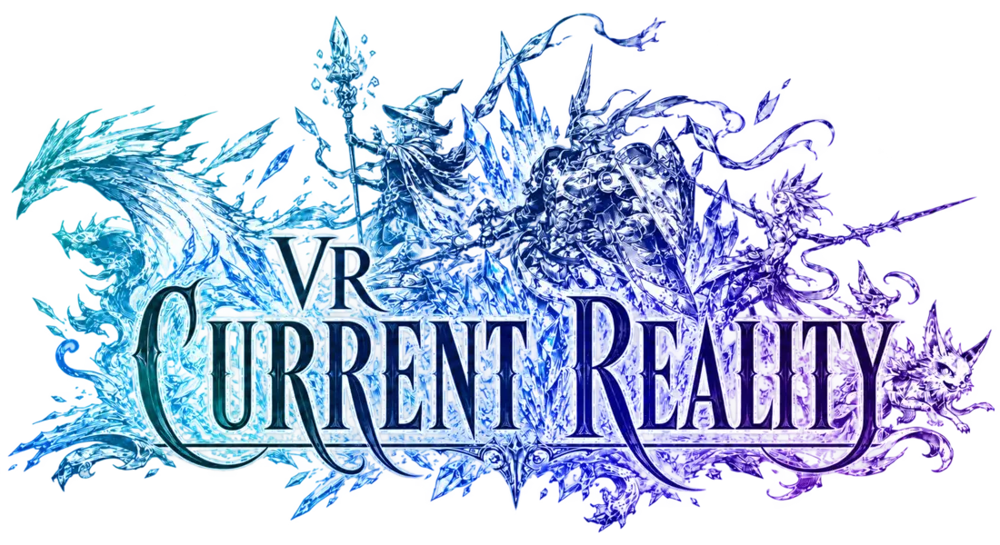

Story & progression

The road through Vana’diel starts here
Welcome, adventurer.
Follow the story, unlock the world, master your job, and find the information you need without digging through one endless page.
Prepare for battle
Jobs and Combat
Adventurer Guides
Character & Party
Items & Crafting
Current Reality resources